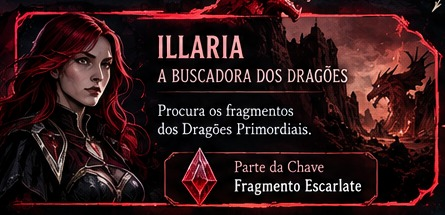
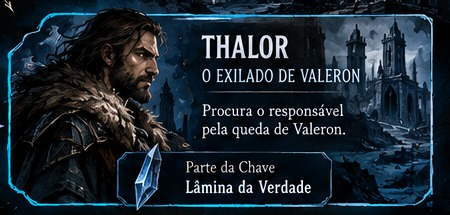

A Buscadora dos Dragões
Illaria
Segue rastros ligados aos Dragões Primordiais e aos mistérios antigos de Nexalis.
Tudo que o jogador precisa durante a mesa, sem a bagunça de páginas de mestre: ficha digital, regras essenciais, NPCs revelados e biblioteca de jogo.
O portal agora prioriza o que realmente é consultado pelos jogadores.
Atributos, vitalidade, mana, equipamentos, magias, passivas, inventário e PDF.
Abrir ficha →Testes, atributos, combate, distância, progressão e regras que o jogador usa na mesa.
Ver regras →Somente personagens criados para a campanha, com as artes que já fizemos.
Abrir galeria →Raças, classes, armas, magias, habilidades, alquimia e animais em um único lugar.
Consultar →Alguns dos NPCs importantes que os jogadores podem reconhecer na campanha.

Segue rastros ligados aos Dragões Primordiais e aos mistérios antigos de Nexalis.

Ligado ao Véu, enxerga coisas que permanecem escondidas para pessoas comuns.

Um homem marcado pela queda de Valeron e pela busca de respostas.